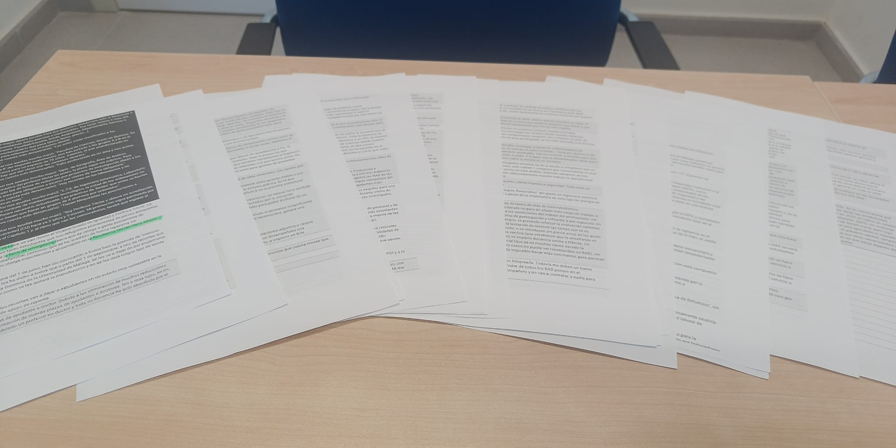
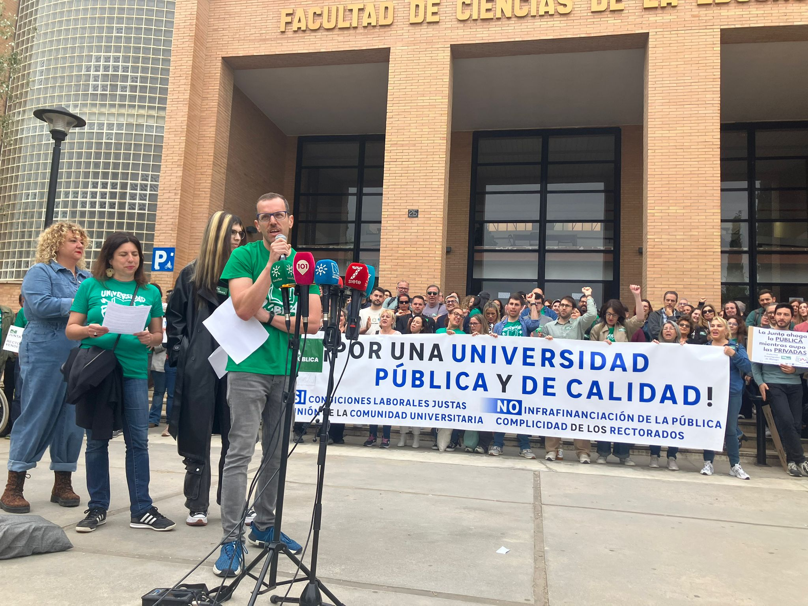
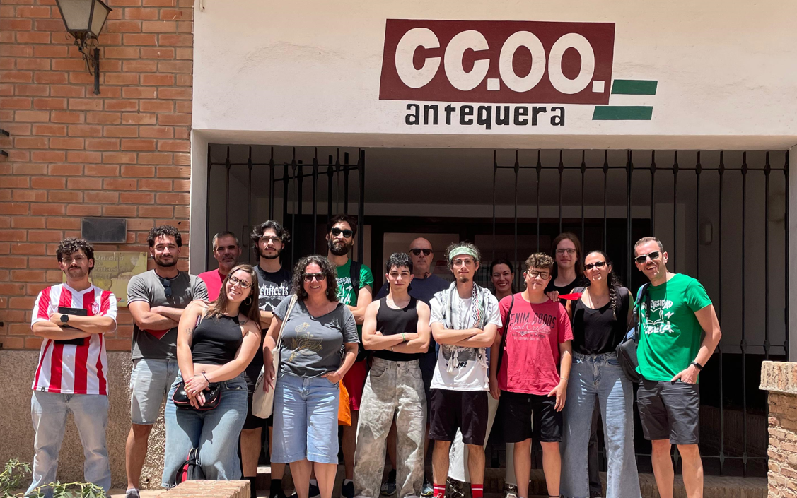
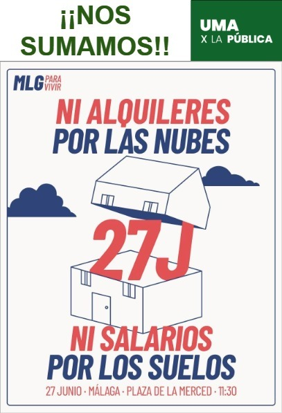
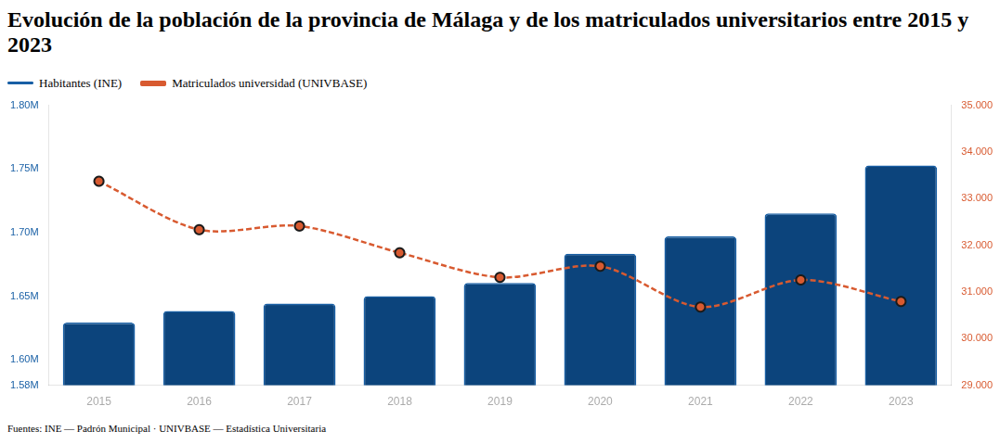

Durante los últimos meses, UMA x la Pública ha recogido testimonios de la comunidad universitaria malagueña sobre el impacto de los recortes presupuestarios. Hemos recibido más de 300 respuestas al cuestionario lanzado, que reflejan de manera cruda cómo la infrafinanciación afecta a la calidad educativa, las condiciones laborales y la investigación en nuestra universidad.
Ya puedes consultar el análisis completo de estas respuestas:
🔗 Análisis de respuestas sobre recortes en la UMA
Si aún no has rellenado el formulario, todavía estamos recopilando información:
🔗 Contribuye con tu testimonio
Antes del verano, elaboraremos un documento con todas las respuestas recopiladas que entregaremos por registro al rector, exigiendo que se tomen medidas urgentes para revertir la situación de la Universidad de Málaga.

El 29 de abril, UMA x la Pública se sumó a una movilización coordinada con otras 6 universidades andaluzas a través de la plataforma Universidades Andaluzas x la Pública. Esta acción conjunta demuestra que la lucha por la defensa de la educación pública superior trasciende los límites de Málaga: es una batalla común de toda Andalucía frente a los recortes y la mercantilización de nuestras universidades.
La coordinación interuniversitaria es fundamental para lograr que nuestras reivindicaciones lleguen con más fuerza a las instituciones y para construir un movimiento estudiantil y de trabajadores universitarios verdaderamente potente.

El 21 de junio, UMA x la Pública participó en el primer encuentro presencial de la plataforma Universidades Andaluzas x la Pública celebrado en Antequera. Este encuentro fue un hito importante: delegaciones de colectivos de estudiantes, trabajadores y docentes de universidades públicas andaluzas se reunieron para coordinar estrategias comunes, compartir experiencias y fortalecer la red de solidaridad entre universidades.
El encuentro reflejó la determinación de toda Andalucía de defender la universidad pública como bien común y de frenar la privatización silenciosa que está sufriendo nuestro sistema de educación superior.

Desde la plataforma Universidades Andaluzas x la Pública, estamos en conversaciones activas con el Movimiento Noviembre Verde, una iniciativa que está planificando movilizaciones de todo el sector educativo (primaria, secundaria, universidad) para el próximo curso 2026/27.
Estas conversaciones son muy relevantes: significan que la defensa de la educación pública está dejando de ser una lucha aislada de cada colectivo para convertirse en un frente común de estudiantes, docentes y trabajadores de todos los niveles educativos. Juntos seremos más fuertes.

El 27 de junio, UMA x la Pública participó en la manifestación por la vivienda, porque para nosotros es evidente: la vivienda es un obstáculo fundamental para el acceso a la educación superior. Cuando el alojamiento es inasumible, muchas personas no pueden ni siquiera plantearse estudiar en la universidad. Este es un problema que afecta especialmente a estudiantes de otras ciudades y provincias.
Nuestro posicionamiento es claro: no hay educación pública de calidad si no garantizamos que la vivienda sea accesible. Por eso hemos elaborado un comunicado que profundiza en esta conexión:
🔗 Comunicado: "La vivienda como obstáculo para el acceso a la educación superior"

Los datos son elocuentes y demuestran la realidad de la infrafinanciación que sufre la UMA: entre 2015 y 2023, la población de la provincia de Málaga creció en 123.549 habitantes (+7,6%, según datos del INE), mientras que simultáneamente los matriculados en la UMA bajaron en 2.577 estudiantes (-7,7%, según UNIVBASE).
Esta paradoja es insostenible: cuando la provincia crece y demanda más oportunidades educativas, la universidad pública se encoge. Además, en ese mismo período, las notas de corte no han dejado de subir, lo que evidencia una política consciente de restricción del acceso a la educación superior pública. Es un círculo vicioso: menos recursos, menos plazas, notas de corte más altas, menos acceso.
Los números hablan solos: la Junta de Andalucía está infrafinanciando deliberadamente la universidad pública mientras la población crece. Esto es una traición a los derechos de la comunidad malagueña.